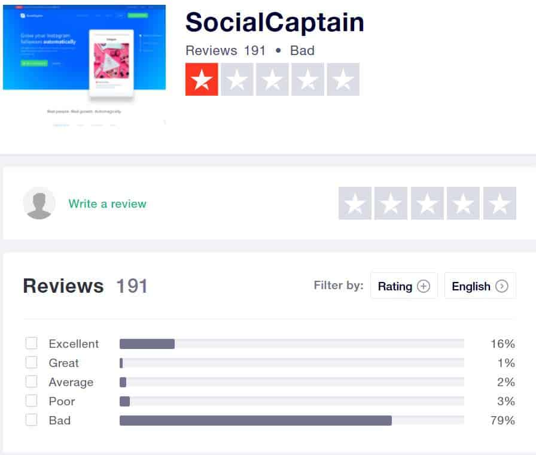
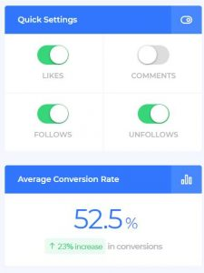
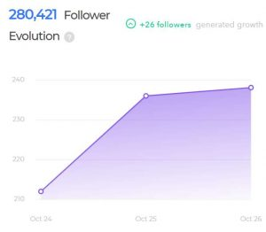

Congratulations on doing more research on Social Captain before you buy the platform. In this Social Captain review, we will take a look at the tool’s features and services, and you can decide if it’s the right tool for you. We’ll also be discussing the pros and cons of this Instagram tool.
Let’s get started.
First Impressions
At first look, Social Captain looks like a decent Instagram management tool. It claims to offer real-time results and powerful growth from real Instagram accounts. They use AI-powered modules to automate a wide variety of tasks, such as likes, comments, follow, and what not.
Overall, nothing really stood out to me. I didn’t notice any red-flags, and I also didn’t notice any amazing features or claims. To me, Social Captain looks like a run-of-the-mill Instagram bot.
On their website, they also claim that their tool is much better than Upleap, one of our recommended Instagram managers.
But…
After digging around a bit, I noticed Social Captain’s Trust Pilot page has a one star rating with over 70% of users rating it bad.

How can one of the most popular Instagram bots have such bad reviews?
Continue reading this review to find out.
Is Social Captain Safe?
I understand most of you are worried about using bots because you’re afraid Instagram will ban your account. Most of the time, Instagram won’t straight-up ban your account. First, they’ll ask you to change your password. In worse scenarios, they’ll remove the likes and followers you acquired from the bots, but that’s quite rare.
After checking out the above Trust Pilot page, I had a feeling the platform is not very safe. Nevertheless, after trying it for a bit on a test account, I can say Social Captain is safe.
Social Captain is a legitimate company and they use high levels of encryption to keep your data safe. Personally, I wouldn’t worry about the safety of the platform.
But that doesn’t mean it’s great.
Do We Recommend Social Captain?
I’ll cut to the chase, although Social Captain is an okay tool, it’s not something we recommend, for reasons we’ll mention later in this review. If you’re looking for something we do recommend, take a look at the article below.
Take a look at this list of recommended Instagram tools.
Two of our favorites:
Social Captain Features
Now let’s get into the details.
Social Captain offers most of the usual Instagram bot features and services.
Let’s run through them real quick.
Automation Services
Social Captain offers the four main automation services; Follow, Unfollow, Comment, and Like.

They also have a Auto-Direct Message service, but it’s in BETA at the moment. The cool thing about Social Captain is you can drag a slider to set limits for each service, as well as change the activity speed.
You can also easily toggle the services you want from inside the dashboard, and you can have all four running at the same time, although that’s not recommended.
Filters
Since Social Captain promises to only bring real followers back to your account, they have an extensive list of filters for you to use. If you’re not sure what to select, there is a Load Optimized button.
Overall, the filters are straightforward and easy to understand, nothing too complicated. I also like how there are little question mark icons next to each setting with a text bubble that explains what the service does.
Here’s a list of some of the filters:
- Gender Filter
- Media Age
- Post Type
- Ignore Low Quality Users
Filters should be combined with targets for the best result, which brings us to the next section.
Creating Targets
Setting the right targets is very important because they will essentially tell the bot who to interact with. If you choose the wrong targets, you’ll end up with random people on your account, and that won’t do you any good. Un-targeted followers don’t convert.
Social Captain uses two types of targets; Username and Hashtags. When you type in a username, the bot will interact with that account’s followers, and take it from there. Hashtags will also help narrow down the ideal audience.
And there’s also the option to Add a Place, which targets users based on geographical location. When you type in a city or area, a list of cities will appear, and you can select the ones you want to target. Great for building local brands.
Automatically Post Comments
On this page you’ll also see a comment section. These are the comments that will be automatically posted on your target audience’s pages. You can write pretty much anything here, complete with emojis.
Look:
If you choose to use this feature, make sure to write more than one comment, otherwise you’ll be posting the same comment on many different pages, a clear footprint of bot-use.
Personally, I don’t like the auto-comment features because I feel there’s already enough spam on Instagram. But comments can be useful, depending on how you use them.
How Much Does Social Captain Cost?
There are a few payment options, most of which are based on time.
Take a look:
- 7 days – $15
- 30 days – $39
- Turbo Mode – $99/month
There’s also the annual payment option which adds some long term discounts but costs more upfront. Growth costs $349 a year, while Turbo costs $690 a year.
Overall, not the most budget-friendly tool. If you’re looking for a budget-friendly Instagram bot that has basically the same features, I recommend taking a look at Kenji. It also uses AI and it costs $19/month, for the standard plan.
What I Liked About Social Captain
Here’s what I liked about this tool.
Use Their Online Platform or Download the App 👍
I thought it was cool how you can choose to either use the tool through their online platform, or download the app to your computer. It’s also nice to know the app works with Mac OS, Windows, and Linux. In other words, basically every operating system.
Very Simple and Compact User Interface 👍
I like how Social Captain makes everything easy for complete beginners, with help bubbles on every feature, optimized defaults buttons, and a very simple dashboard.
There’s nothing more annoying that buying a tool only to have to spend hours learning how to use it. With Social Captain, everything is basically done for you, which is a really nice feature. Basically, all that you need to do is connect your account, add targets and filters, and then let the bot get to work.
Detailed Reports and Stats 👍
As marketers, we always like to see the results of our work, and Social Captain does a great job at showing you the results. There’s a graph right on the dashboard called the Follower Evolution which shows you how many new followers are coming in over time.

There’s also a Live Activity Feed to see what the bot is doing behind the scenes. You’ll also see your account’s new followers, their quality score, and top-sources that are bringing in the most new followers. Overall, it’s very nice to have this data right in the dashboard.
Great Help Center 👍
One thing you’ll be happy to know is Social Captain has an extensive library of tutorials in their help center. You also don’t need to be a member to access the help center, so you can learn more about the tool ,and how it works, without buying a subscription.
On The Other Hand… What I Didn’t Like About Social Captain
You’re probably wondering how this tool can have so many upsides while also having such a poor rating online? Remember, it only has a one out of five star rating on Trust Pilot, with people straight up calling the platform a scam.
What’s going on?
Well, there are some downsides you need to know about.
1- Day Only Trial 😞
Oddly enough, Social Captain only offers a one day trial, or 24 hours. When compared to other tools, this trial period is shockingly short.
I mean, a 3-day trial is the standard these days (Kenji offers 3 days for free), and some tools even offer a week of free use. As you probably know, one day isn’t really enough time to fully test out a platform. It would be nice if the trial period was a little longer.
Unresponsive Customer Support 😞
It looks like Social Captain’s customer support is rather unresponsive. The vast majority of negative reviews about this platform mentioned the unresponsive customer support.
Either the support team never replies to complaints or refund requests, or they do reply but can’t resolve the issue. It’s never a good sign when a company has unresponsive customer support.
Instagram Blocking Users 😞
Another claim is Instagram is blocking accounts that use Social Captain. One user said he tried the tool for a month and then Instagram banned his account for one week. After that, Social Captain’s support didn’t look into the situation or even bother to reply to his emails.
And that case is not unique. I have many complaints online about Social Captain that mention the same situation. Most people say after two weeks Instagram will catch on and start blocking your account. Some people even mentioned they were blocked for a week after using the tool for one day!
Unauthorized Charges, No Way to Cancel Subscription 😞
It seems like a lot of people are upset and claiming Social Captain doesn’t let them cancel their subscriptions and continues to charge their credit cards.
Most of the people complaining about this issue said they emailed the Social Captain support many times and the support never replied. If you find yourself in this situation, it’s best to contact your credit card company and ask them to block the charges.
What Happened to Social Captain?
If you’re familiar with Instagram tools, then you probably know Social Captain was one of the best bots out there. Now it seems like the company took a nose dive.
The vast majority of the negative reviews published about this company were released this month. It makes you wonder what happened with Social Captain during these past couple of months. I can’t say for sure, but it seems like there might have been a shift in leadership or management.
Although the tool is still active and hasn’t been shutdown, it’s not something I want to use for the long term. There must be a reason so many people are unhappy with this tool, they can’t all be haters. I feel like the tool does work, but as soon as it runs into an issue, it will stop working forever, and there’s no way to resolve it.
Best Social Captain Alternative
Now, Social Captain is an Instagram bot, one that seems to have a good amount of features, even though there are numerous complaints about the management. But I feel like you are better off using a bot that doesn’t have such a bad reputation online.
Kenji
For example, Kenji is not only cheaper, but there aren’t any scathing reviews about it online. Most of the people who use Kenji are generally satisfied. So if you’re looking for a good Social Captain alternative, I recommend checking out Kenji.
Of course, when it come to using any Instagram bot, it’s always better to proceed with caution. For instance, make sure the bot’s activity speed is set to the slowest, and try not to activate to many features at what time, especially when you first start using the bot.
Upleap
Another tool worth taking a look at is called Upleap. The way this tool works is a bit different because they assign a real person to your Instagram account. It’s not really an Instagram bot.
Real people that automate activity on your Instagram account for you. Granted, the price is a little higher, but the service quality is higher too, and there’s almost no risk of running into any of Instagram’s spam filters.
In short, if you’re looking for a Social Captain alternative, I recommend Kenji for a bot, and Upleap for real social media management. Thanks for taking the time to read this Social Captain review.
You May Also Like:


1 Comment